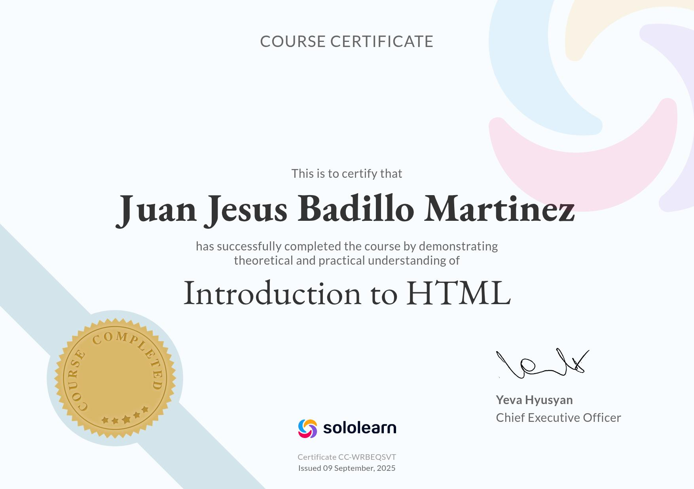

Mi Presentacion
Objetivos
Habilidades en desarrollo web, resolución de problemas y colaboración en equipo.
Busca oportunidades para aplicar sus conocimientos y crecer en la industria tecnológica.
Educacion
- Secundaria #7 issac newton – Electronica (2013 - 2016)
- Cetis 109 – Soporte y mantenimiento en computo (2016 - 2019)
Experiencia laboral
-
Captura de datos – (2018 – 2018)
- Experiencia de captura de datos.
- Funciones basicas de exel.
- Buen trabajo en equipo.
-
Subway – (2022 – 2025)
- Experiencia tratando con clientes.
- Manejo del sistema del local.
Habilidades
- Manejo del lenguaje de kotlin
- Conocimiento en base de datos
- Bueno trabajando en equipo
Logros

- Diploma de introduccion en HTML (2025)
Mas sobre mi